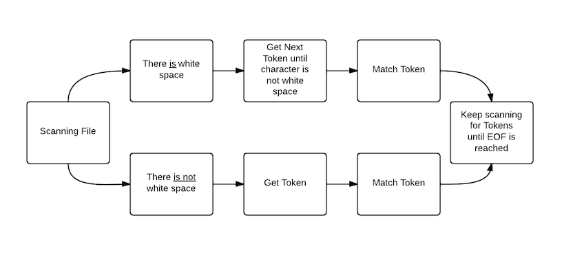
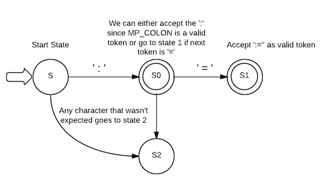

Scanner Commentary
By Jourdan Lipp
Purpose of the Scanner
The scanner is the basis of the compiler because without the scanner the translation of the language can not be done. A scanner is also known as a lexical analyzer since its a process of converting a sequence of characters into a sequence of tokens. The scanner identifies the character and determines if it is a token. In order to determine what is a token the rules of the lexer (scanner) must be defined. This entire process gives the foundation of what is needed for the second phase of the compiler, which is the parser.
Theory Behind Scanning
A scanner can be implemented by being broken into the following steps: 1. List of tokens, 2. Obtain regular regular expressions for each token, 3. Create the corresponding finite state automata, 4. Modify the finite state automata to handle the practicalities of scanning, 5. Combine the finite state automata into a single unit, and 6. eliminate nondeterminism. These six steps give the basis for implementing and building a scanner. The scanner is also made up of matching algorithms that match each individual token. In order for the scanner to work correctly the methods (rules) must be correctly declared. These methods are used to idenitify the tokens in the file. One of the methods used to identify a token is by using regular expressions, which gives a specific sequence of characters. Other methods to determine tokens are specific definitions by a dictionary, and by specific separating characters known as delimiters.
Dispatcher
The dispatcher works as intended, which is to prepare scanning for the next token. The dispatcher must first skip any white space in the input file beginning with the current position of the file pointer. The next step is to examine first non-white space character encountered without consuming the character. The final step is calling the proper method for handling tokens that begin with that character.
Dispatcher Diagram:

PreConditions for the Dispatcher: The source file points to the first character of the lexeme corresponding to the next token.
PostConditions for the Dispatcher: The value of the token attribute or variable has just been set to the token just scanned, and the value of the lexeme attribute or variable has been set to the lexeme just scanned, and the file pointer is pointing to the first character after the token just scanned.
Tokens
A token is a string of characters. A token is determined by the grammar of the language. A token is typically an item that the compiler cares about such as reserved words, variable names, type names, and symbol names.
Interesting Token Example
When building our scanner many of the tokens that were defined in the micropascal language were similar to those of other programming languages. However, one particular token stood out to me. I found the MP_ASSIGN token to be interesting since many of the programming languages I use do not assign values this way. To determine if the token is MP_ASSIGN the ':' character must be matched first then followed by the matching of the '=' character.
Regular Expression for Tokens
Assign: : | =
Finite State Automaton for Token, Extended for Scanning

Implementing the Finite State Automaton
public static void MP_ASSIGN() {
int state = 0;
char currentChar = file.charAt(index);
currentLexeme= "";
while (true) {
currentChar = file.charAt(index);
switch (state) {
case 0:
switch (currentChar) {
case ':':
currentLexeme = currentLexeme+ currentChar;
index++;
currentColNumber++;
state = 1;
}
break;
case 1:
switch (currentChar) {
case '=':
currentLexeme = currentLexeme+ currentChar;
index++;
currentColNumber++;
currentToken = "MP_ASSIGN";
return;
default:
currentToken = "MP_COLON";
return;
}
}
}
}